在 VS Code 中调试 Node.js
Visual Studio Code 编辑器内置了对 Node.js 运行时的调试支持，可以调试 JavaScript、TypeScript 以及许多其他转译为 JavaScript 的语言。为 Node.js 调试设置项目非常简单，VS Code 提供了适当的启动配置默认值和代码片段。
在 VS Code 中调试 Node.js 程序有几种方式：
- 使用自动附加来调试你在 VS Code 集成终端中运行的进程。
- 使用 JavaScript 调试终端，与使用集成终端类似。
- 使用启动配置来启动你的程序，或者附加到进程（在 VS Code 外部启动的进程）。
自动附加
如果启用了自动附加功能，Node 调试器会自动附加到从 VS Code 集成终端启动的某些 Node.js 进程。要启用此功能，可以使用命令面板 (kb(workbench.action.showCommands)) 中的切换自动附加命令，或者如果已激活，则使用状态栏中的自动附加项。
自动附加有三种模式，你可以在弹出的快速选择中或通过 debug.javascript.autoAttachFilter 设置进行选择：
smart- 如果你在node_modules文件夹之外执行脚本，或使用常见的"运行器"脚本（如 mocha 或 ts-node），则该进程将被调试。你可以使用自动附加智能模式设置（debug.javascript.autoAttachSmartPattern）来配置"运行器"脚本允许列表。always- 在集成终端中启动的所有 Node.js 进程都将被调试。onlyWithFlag- 只有使用--inspect或--inspect-brk标志启动的进程才会被调试。
启用自动附加后，你需要通过点击终端右上角的 ⚠ 图标来重启终端，或者直接创建一个新终端。然后，调试器会在一秒内附加到你的程序：
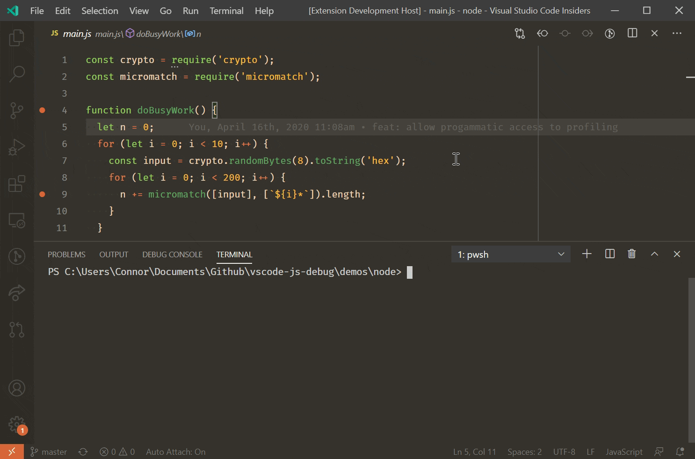
当自动附加开启时，Auto Attach 项将出现在 VS Code 窗口底部的状态栏中。点击它可以更改自动附加模式，或临时关闭它。如果你正在运行一些不需要调试的一次性程序，但不想完全禁用该功能，临时关闭自动附加会很有用。
附加配置
其他启动配置属性
你可以在 debug.javascript.terminalOptions 设置中为自动附加应用通常在 launch.json 中的其他属性。例如，要将 node 内部模块添加到你的 skipFiles 中，可以将以下内容添加到你的用户或工作区设置中：
"debug.javascript.terminalOptions": {
"skipFiles": [
"<node_internals>/**"
]
},自动附加智能模式
在 smart 自动附加模式下，VS Code 会尝试附加到你的代码，而不会附加到你不想调试的构建工具。它通过将主脚本与 glob 模式 列表进行匹配来实现这一点。glob 模式可以在 debug.javascript.autoAttachSmartPattern 设置中配置，默认为：
[
"!**/node_modules/**", // 排除 node_modules 文件夹中的脚本
"**/$KNOWN_TOOLS$/**" // 但包含一些常见工具
]$KNOWN_TOOLS$ 会被替换为常见的"代码运行器"列表，如 ts-node、mocha、ava 等。如果这些设置不适用，你可以修改此列表。例如，要排除 mocha 并包含 my-cool-test-runner，你可以添加两行：
[
"!**/node_modules/**",
"**/$KNOWN_TOOLS$/**",
"!**/node_modules/mocha/**", // 使用 "!" 排除 "mocha" node 模块中的所有脚本
"**/node_modules/my-cool-test-runner/**" // 包含自定义测试运行器中的脚本
]JavaScript 调试终端
与自动附加类似，JavaScript 调试终端会自动调试你在其中运行的任何 Node.js 进程。你可以通过命令面板 (kbs(workbench.action.showCommands)) 运行调试：创建 JavaScript 调试终端命令，或从终端切换下拉菜单中选择创建 JavaScript 调试终端来创建调试终端。
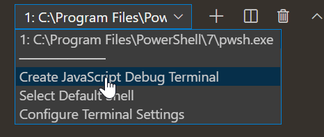
附加配置
其他启动配置属性
你可以在 debug.javascript.terminalOptions 设置中为调试终端应用通常在 launch.json 中的其他属性。例如，要将 node 内部模块添加到你的 skipFiles 中，可以将以下内容添加到你的用户或工作区设置中：
"debug.javascript.terminalOptions": {
"skipFiles": [
"<node_internals>/**"
]
},启动配置
启动配置是在 VS Code 中设置调试的传统方式，为你运行复杂应用程序提供了最多的配置选项。
在本节中，我们将更详细地介绍针对更高级调试场景的配置和功能。你将找到有关使用源映射、跳过外部代码、进行远程调试等的说明。
如果你想观看入门视频，请查看 VS Code 调试入门。
>注意：如果你刚刚开始使用 VS Code，可以在调试主题中了解一般调试功能和创建 launch.json 配置文件。
启动配置属性
调试配置存储在工作区 .vscode 文件夹中的 launch.json 文件里。关于调试配置文件的创建和使用介绍，请参阅通用的调试文章。
以下是 Node.js 调试器特有的常见 launch.json 属性参考。你可以在 vscode-js-debug 选项文档中查看完整的选项集。
以下属性在类型为 launch 和 attach 的启动配置中受支持：
outFiles- 用于定位生成的 JavaScript 文件的 glob 模式数组。请参阅源映射部分。resolveSourceMapLocations- 用于指定应解析源映射的位置的 glob 模式数组。请参阅源映射部分。timeout- 重新启动会话时，在此毫秒数后放弃。请参阅附加到 Node.js 部分。stopOnEntry- 程序启动时立即中断。localRoot- VS Code 的根目录。请参阅下面的远程调试部分。remoteRoot- Node 的根目录。请参阅下面的远程调试部分。smartStep- 尝试自动跳过不映射到源文件的代码。请参阅智能单步执行。skipFiles- 自动跳过这些 glob 模式匹配的文件。请参阅跳过不感兴趣的代码部分。trace- 启用诊断输出。
以下属性仅适用于请求类型为 launch 的启动配置：
program- 要调试的 Node.js 程序的绝对路径。args- 传递给要调试的程序的参数。此属性类型为数组，期望将各个参数作为数组元素。cwd- 在此目录中启动要调试的程序。runtimeExecutable- 要使用的运行时可执行文件的绝对路径。默认为node。请参阅对 'npm' 和其他工具的启动配置支持部分。runtimeArgs- 传递给运行时可执行文件的可选参数。runtimeVersion- 如果使用 "nvm"（或 "nvm-windows"）或 "nvs" 来管理 Node.js 版本，此属性可用于选择特定的 Node.js 版本。请参阅下面的多版本支持部分。env- 可选的环境变量。此属性期望将环境变量作为字符串类型的键值对列表。envFile- 包含环境变量定义的文件的可选路径。请参阅下面的从外部文件加载环境变量部分。console- 启动程序时使用的控制台类型（internalConsole、integratedTerminal、externalTerminal）。请参阅下面的 Node 控制台部分。outputCapture- 如果设置为std，进程 stdout/stderr 的输出将显示在调试控制台中，而不是通过调试端口监听输出。这对于直接写入 stdout/stderr 流而不是使用console.*API 的程序或日志库很有用。
此属性仅适用于请求类型为 attach 的启动配置：
restart- 终止时重新启动连接。请参阅源代码编辑时自动重启调试会话部分。port- 要使用的调试端口。请参阅附加到 Node.js 和远程调试部分。address- 调试端口的 TCP/IP 地址。请参阅附加到 Node.js 和远程调试部分。processId- 调试器在发送 USR1 信号后尝试附加到此进程。使用此设置，调试器可以附加到未在调试模式下启动的已运行进程。使用processId属性时，调试端口会根据 Node.js 版本（和所用协议）自动确定，无法显式配置。因此不要指定port属性。continueOnAttach- 如果进程在附加时处于暂停状态，是否继续执行。如果你使用--inspect-brk启动程序，此选项很有用。常见场景的启动配置
你可以在 launch.json 文件中触发 IntelliSense (kb(editor.action.triggerSuggest)) 来查看常用 Node.js 调试场景的启动配置代码片段。
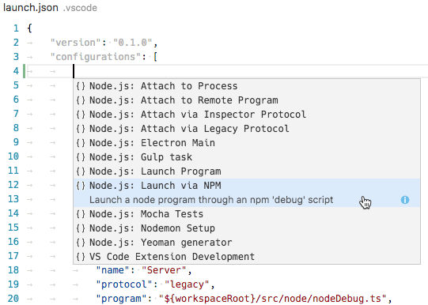
你也可以通过 launch.json 编辑器窗口右下角的添加配置...按钮来调出这些代码片段。
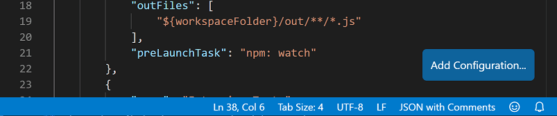
以下代码片段可用：
- 启动程序：在调试模式下启动一个 Node.js 程序。
- 通过 npm 启动：通过 npm 的 'debug' 脚本启动 Node.js 程序。如果你的 package.json 中定义了 npm debug 脚本，你可以在启动配置中使用该脚本。npm 脚本中使用的调试端口必须与代码片段中指定的端口相对应。
- 附加：附加到本地运行的 Node.js 程序的调试端口。确保要调试的 Node.js 程序已在调试模式下启动，并且使用的调试端口与代码片段中指定的端口相同。
- 附加到远程程序：附加到在
address属性指定的主机上运行的 Node.js 程序的调试端口。确保要调试的 Node.js 程序已在调试模式下启动，并且使用的调试端口与代码片段中指定的端口相同。为帮助 VS Code 在工作区和远程主机的文件系统之间映射源文件，请确保为localRoot和remoteRoot属性指定正确的路径。 - 通过进程 ID 附加：打开进程选择器以选择要调试的 node 或 gulp 进程。使用此启动配置，你甚至可以附加到未在调试模式下启动的 node 或 gulp 进程。
- Nodemon 设置：使用 nodemon 在 JavaScript 源代码更改时自动重新启动调试会话。确保已全局安装 nodemon。请注意，终止调试会话只会终止要调试的程序，而不会终止 nodemon 本身。要终止 nodemon，请在集成终端中按
kbstyle(Ctrl+C)。 - Mocha 测试：在项目的
test文件夹中调试 mocha 测试。确保你的项目已在node_modules文件夹中安装了 'mocha'。 - Yeoman 生成器：调试 yeoman 生成器。该代码片段要求你指定生成器的名称。确保你的项目已在
node_modules文件夹中安装了 'yo'，并且已通过在项目文件夹中运行npm link来安装你的生成器项目以进行调试。 - Gulp 任务：调试 gulp 任务。确保你的项目已在
node_modules文件夹中安装了 'gulp'。 - Electron 主进程：调试 Electron 应用程序的主 Node.js 进程。该代码片段假设 Electron 可执行文件已安装在工作区的
node_modules/.bin目录中。Node 控制台
默认情况下，Node.js 调试会话在内部 VS Code 调试控制台中启动目标程序。由于调试控制台不支持需要从控制台读取输入的程序，你可以通过将启动配置中的 console 属性设置为 externalTerminal 或 integratedTerminal 来分别启用外部终端或使用 VS Code 集成终端。默认值为 internalConsole。
在外部终端中，你可以通过 terminal.external.windowsExec、terminal.external.osxExec 和 terminal.external.linuxExec 设置来配置要使用的终端程序。
对 'npm' 和其他工具的启动配置支持
除了直接用 node 启动 Node.js 程序，你可以直接从启动配置中使用 'npm' 脚本或其他任务运行器工具：
- 你可以为
runtimeExecutable属性使用 PATH 上任何可用的程序（例如 'npm'、'mocha'、'gulp' 等），参数可以通过runtimeArgs传递。 - 如果你的 npm 脚本或其他工具隐式指定了要启动的程序，则无需设置
program属性。
让我们看一个 'npm' 示例。如果你的 package.json 有一个 'debug' 脚本，例如：
"scripts": {
"debug": "node myProgram.js"
},相应的启动配置将如下所示：
{
"name": "通过 npm 启动",
"type": "node",
"request": "launch",
"cwd": "${workspaceFolder}",
"runtimeExecutable": "npm",
"runtimeArgs": [
"run-script", "debug"
],
}多版本支持
如果你使用 'nvm'（或 'nvm-windows'）来管理 Node.js 版本，可以在启动配置中指定 runtimeVersion 属性来选择特定的 Node.js 版本：
{
"type": "node",
"request": "launch",
"name": "启动测试",
"runtimeVersion": "14",
"program": "${workspaceFolder}/test.js"
}如果你使用 'nvs' 来管理 Node.js 版本，可以使用 runtimeVersion 属性来选择特定的版本、架构和发行版的 Node.js，例如：
{
"type": "node",
"request": "launch",
"name": "启动测试",
"runtimeVersion": "chackracore/8.9.4/x64",
"program": "${workspaceFolder}/test.js"
}确保你已经安装了要配合 runtimeVersion 属性使用的那些 Node.js 版本，因为该功能不会自动下载和安装指定版本。例如，如果你计划将 "runtimeVersion": "7.10.1" 添加到启动配置中，你需要从集成终端运行类似 nvm install 7.10.1 或 nvs add 7.10.1 的命令。
如果省略次版本号和补丁版本号，例如 "runtimeVersion": "14"，则将使用系统上已安装的最新 14.x.y 版本。
从外部文件加载环境变量
VS Code Node 调试器支持从文件加载环境变量并将其传递给 Node.js 运行时。要使用此功能，请在启动配置中添加 envFile 属性，并指定包含环境变量的文件的绝对路径：
//...
"envFile": "${workspaceFolder}/.env",
"env": { "USER": "john doe" }
//...在 env 字典中指定的任何环境变量都将覆盖从文件中加载的变量。
以下是 .env 文件的示例：
USER=doe
PASSWORD=abc123
# 注释
# 空值：
empty=
# 引号字符串中的换行符会被展开：
lines="foo\nbar"附加到 Node.js
如果你想将 VS Code 调试器附加到外部 Node.js 程序，请按如下方式启动 Node.js：
node --inspect program.js或者，如果程序不应立即开始运行，而是必须等待调试器附加：
node --inspect-brk program.js将调试器附加到程序的选项：
- 打开一个"进程选择器"，列出所有潜在的候选进程并让你选择一个，或者
- 创建一个显式指定所有配置选项的"附加"配置，然后按 F5。
让我们详细了解这些选项：
附加到 Node 进程操作
命令面板 (kb(workbench.action.showCommands)) 中的附加到 Node 进程命令会打开一个快速选择菜单，列出 Node.js 调试器可用的所有潜在进程：
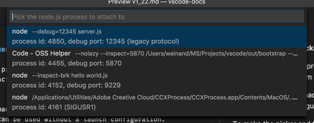
选择器中列出的各个进程显示了调试端口和进程 ID。在该列表中选择你的 Node.js 进程后，Node.js 调试器将尝试附加到它。
除了 Node.js 进程外，选择器还显示使用各种形式的 --inspect 参数启动的其他程序。这使得附加到 Electron 或 VS Code 的辅助进程成为可能。
设置"附加"配置
此选项需要更多的配置工作，但与前面两个选项相比，它允许你显式配置各种调试配置选项。
最简单的"附加"配置如下所示：
{
"name": "附加到进程",
"type": "node",
"request": "attach",
"port": 9229
}端口 9229 是 --inspect 和 --inspect-brk 选项的默认调试端口。要使用不同的端口（例如 12345），请将其添加到选项中，如：--inspect=12345 和 --inspect-brk=12345，并相应更改启动配置中的 port 属性。
要附加到未在调试模式下启动的 Node.js 进程，你可以通过将 Node.js 进程的进程 ID 指定为字符串来实现：
{
"name": "附加到进程",
"type": "node",
"request": "attach",
"processId": "53426"
}为避免在启动配置中重复输入新的进程 ID，Node 调试支持一个命令变量 PickProcess，它将打开进程选择器（如上所述）。
使用 PickProcess 变量，启动配置如下所示：
{
"name": "附加到进程",
"type": "node",
"request": "attach",
"processId": "${command:PickProcess}"
}停止调试
使用调试：停止操作（可在调试工具栏中或通过命令面板使用）会停止调试会话。
如果调试会话是在"附加"模式下启动的（并且调试工具栏中的红色终止按钮显示一个叠加的"插头"图标），按停止会断开 Node.js 调试器与被调试程序的连接，被调试程序随后继续执行。
如果调试会话处于"启动"模式，按停止会执行以下操作：
- 首次按停止时，被调试程序被要求通过发送
SIGINT信号来优雅关闭。被调试程序可以自由拦截此信号并根据需要清理任何内容然后关闭。如果关闭代码中没有断点（或问题），被调试程序和调试会话将终止。 - 但是，如果调试器在关闭代码中遇到断点，或者被调试程序自身没有正确终止，则调试会话不会结束。在这种情况下，再次按停止将强制终止被调试程序及其子进程（
SIGKILL）。
如果你发现按红色停止按钮后调试会话没有结束，请再次按该按钮以强制关闭被调试程序。
在 Windows 上，按停止会强制终止被调试程序及其子进程。
源映射
VS Code 的 JavaScript 调试器支持源映射，有助于调试转译语言，例如 TypeScript 或压缩/混淆的 JavaScript。使用源映射，可以在原始源代码中单步执行或设置断点。如果原始源代码没有源映射，或者源映射已损坏且无法成功在源代码和生成的 JavaScript 之间进行映射，则断点将显示为未验证状态（灰色空心圆圈）。
默认值为 true 的 sourceMaps 属性控制源映射功能。调试器总是尝试使用源映射（如果能找到任何源映射），因此你甚至可以用 program 属性指定源文件（例如 app.ts）。如果出于某种原因需要禁用源映射，可以将 sourceMaps 属性设置为 false。
工具配置
由于源映射并不总是自动创建，你应该确保配置你的转译器来创建它们。例如：
TypeScript
对于 TypeScript，你可以通过向 tsc 传递 --sourceMap 或在 tsconfig.json 文件中添加 "sourceMap": true 来启用源映射。
tsc --sourceMap --outDir bin app.tsBabel
对于 Babel，你需要将 sourceMaps 选项设置为 true，或在编译代码时传递 --source-maps 选项。
npx babel script.js --out-file script-compiled.js --source-mapsWebpack
Webpack 有许多源映射选项。我们建议在 webpack.config.js 中设置属性 devtool: "source-map" 以获得最佳结果保真度，但你也可以尝试其他设置，尽管它们可能会导致构建速度变慢。
此外，如果你在 webpack 中有额外的编译步骤，例如使用 TypeScript 加载器，你还需要确保这些步骤已设置为生成源映射。否则，webpack 生成的源映射将映射回加载器编译后的代码，而不是真正的源代码。
源映射发现
默认情况下，VS Code 会在整个工作区（不包括 node_modules）中搜索源映射。在大型工作区中，此搜索可能会很慢。你可以通过设置 launch.json 中的 outFiles 属性来配置 VS Code 搜索源映射的位置。例如，此配置将仅发现 bin 文件夹中 .js 文件的源映射：
{
"version": "0.2.0",
"configurations": [
{
"name": "启动 TypeScript",
"type": "node",
"request": "launch",
"program": "app.ts",
"outFiles": [ "${workspaceFolder}/bin/**/*.js" ]
}
]
}请注意，outFiles 应匹配你的 JavaScript 文件，而不是源映射文件（后者可能以 .map 而不是 .js 结尾）。
源映射解析
默认情况下，只有 outFiles 中的源映射会被解析。此行为用于防止依赖项干扰你设置的断点。例如，如果你有一个文件 src/index.ts，而某个依赖项有一个引用 webpack:///./src/index.ts 的源映射，这可能会错误地解析到你的源文件，并导致意想不到的结果。
你可以通过设置 resolveSourceMapLocations 选项来配置此行为。如果将其设置为 null，则将解析每个源映射。例如，此配置将额外允许解析 node_modules/some-dependency 中的源映射：
"resolveSourceMapLocations": [
"out/**/*.js",
"node_modules/some-dependency/**/*.js",
]智能单步执行
在启动配置中将 smartStep 属性设置为 true 时，VS Code 将在调试器中单步执行代码时自动跳过"不感兴趣的代码"。"不感兴趣的代码"是由转译过程生成但未被源映射覆盖的代码，因此它不会映射回原始源代码。当你在调试器中单步执行源代码时，这些代码会妨碍你，因为调试器会在原始源代码和你不感兴趣的生成代码之间来回切换。smartStep 将自动跳过未被源映射覆盖的代码，直到它再次到达被源映射覆盖的位置。
智能单步执行对于像 TypeScript 中 async/await 向下编译这种情况特别有用，因为编译器会注入未被源映射覆盖的辅助代码。
smartStep 功能仅适用于从源代码生成并因此具有源映射的 JavaScript 代码。对于没有源代码的 JavaScript，智能单步执行选项没有效果。
JavaScript 源映射提示
使用源映射调试时的一个常见问题是，你设置了一个断点，但它变成了灰色。如果你将光标悬停在其上，你会看到消息"断点已忽略，因为未找到生成的代码（源映射问题？）"。现在该怎么办？有很多问题可能导致这种情况。首先，快速解释一下 Node 调试适配器如何处理源映射。
当你在 app.ts 中设置断点时，调试适配器必须找出 app.js 的路径，app.js 是你的 TypeScript 文件的转译版本，也是 Node 中实际运行的代码。但是，从 .ts 文件开始并没有直接的方法来解决这个问题。相反，调试适配器使用 launch.json 中的 outFiles 属性来查找所有转译后的 .js 文件，并解析它们以获取源映射，其中包含其关联的 .ts 文件的位置。
当你在启用源映射的情况下在 TypeScript 中构建 app.ts 文件时，它要么生成一个 app.js.map 文件，要么将源映射作为 base64 编码字符串内联在 app.js 文件底部的注释中。为了找到与此映射关联的 .ts 文件，调试适配器查看源映射中的两个属性：sources 和 sourceRoot。sourceRoot 是可选的——如果存在，它会被添加到 sources（一个路径数组）中的每个路径之前。结果是一个 .ts 文件的绝对或相对路径数组。相对路径相对于源映射进行解析。
最后，调试适配器在生成的 .ts 文件列表中搜索 app.ts 的完整路径。如果找到匹配项，它就找到了在将 app.ts 映射到 app.js 时要使用的源映射文件。如果没有匹配项，则无法绑定断点，断点将变为灰色。
当断点变灰时，可以尝试以下方法：
- 调试时，运行调试：诊断断点问题命令。此命令将弹出一个工具，可以提供提示帮助你从命令面板 (
kb(workbench.action.showCommands)) 解决问题。 - 你是否在构建时启用了源映射？确保存在
.js.map文件，或者.js文件中存在内联源映射。 - 源映射中的
sourceRoot和sources属性是否正确？它们能否组合起来得到.ts文件的正确路径？ - 你是否在 VS Code 中以错误的大小写打开了文件夹？可以从命令行打开文件夹
foo/，如code FOO，在这种情况下源映射可能无法正确解析。 - 尝试在 Stack Overflow 上搜索有关你特定设置的帮助，或在 GitHub 上提交问题。
- 尝试添加一个
debugger语句。如果它在那里中断到.ts文件中，但该位置的断点无法绑定，这是包含在 GitHub 问题中的有用信息。覆盖源映射路径
调试器使用 sourceMapPathOverrides 来实现自定义的源映射到磁盘的路径映射。大多数工具都有良好的默认设置，但在高级情况下，你可能需要自定义它。默认路径覆盖是一个对象映射，如下所示：
{
'webpack:///./~/*': "${workspaceFolder}/node_modules/*",
'webpack:////*': '/*',
'webpack://@?:*/?:*/*': "${workspaceFolder}/*",
// 以及其他一些模式...
}这将源映射中的路径或 URL 从左侧映射到右侧。模式 ?: 是非贪婪、非捕获匹配，而 是贪婪捕获匹配。调试器然后将右侧模式中相应的 * 替换为从源映射路径中捕获的片段。例如，上述示例中的最后一个模式将把 webpack://@my/package/foo/bar 映射到 ${workspaceFolder}/foo/bar。
请注意，对于浏览器调试，默认 sourceMapPathOverrides 中使用 webRoot 代替 workspaceFolder。
远程调试
注意： VS Code 现在具有通用的远程开发能力。使用远程开发扩展，远程场景和容器中的 Node.js 开发与本地设置中的 Node.js 开发没有区别。这是远程调试 Node.js 程序的推荐方式。请查看入门部分和远程教程以了解更多信息。
如果你无法使用任何远程开发扩展来调试你的 Node.js 程序，以下是如何从本地 VS Code 实例调试远程 Node.js 程序的指南。
Node.js 调试器支持远程调试，你可以附加到在不同机器或容器中运行的进程。通过 address 属性指定远程主机。例如：
{
"type": "node",
"request": "attach",
"name": "附加到远程",
"address": "192.168.148.2", // <- 此处为远程地址
"port": 9229
}默认情况下，VS Code 会将调试的源文件从远程 Node.js 文件夹流式传输到本地 VS Code，并在只读编辑器中显示。你可以单步执行这些代码，但不能修改它。如果你希望 VS Code 改为从工作区打开可编辑的源代码，你可以设置远程和本地位置之间的映射。localRoot 和 remoteRoot 属性可用于映射本地 VS Code 项目和（远程）Node.js 文件夹之间的路径。这甚至可以在同一系统上或跨不同操作系统本地使用。每当需要将代码路径从远程 Node.js 文件夹转换为本地 VS Code 路径时，remoteRoot 路径将从路径中剥离并替换为 localRoot。对于反向转换，localRoot 路径将被替换为 remoteRoot。
{
"type": "node",
"request": "attach",
"name": "附加到远程",
"address": "要调试进程的 TCP/IP 地址",
"port": 9229,
"localRoot": "${workspaceFolder}",
"remoteRoot": "C:\\Users\\username\\project\\server"
}访问已加载的脚本
如果你需要在不属于工作区的脚本中设置断点，因此无法通过正常的 VS Code 文件浏览轻松定位和打开，你可以通过运行和调试视图中的已加载脚本视图访问已加载的脚本：

已加载脚本视图允许你通过输入脚本名称来快速选择脚本，或在键入时筛选开启时过滤列表。
脚本被加载到只读编辑器中，你可以在其中设置断点。这些断点会在调试会话之间被记住，但你只能在进行调试会话期间访问脚本内容。
源代码编辑时自动重启调试会话
启动配置的 restart 属性控制 Node.js 调试器是否在调试会话结束后自动重启。如果你使用 nodemon 在文件更改时重启 Node.js，此功能非常有用。将启动配置属性 restart 设置为 true 会使 node 调试器在 Node.js 终止后自动尝试重新附加到 Node.js。
如果你已在命令行上通过 nodemon 启动你的程序 server.js，如下所示：
nodemon --inspect server.js你可以使用以下启动配置将 VS Code 调试器附加到它：
{
"name": "附加到 node",
"type": "node",
"request": "attach",
"restart": true,
"port": 9229
}或者，你可以直接通过启动配置使用 nodemon 启动程序 server.js 并附加 VS Code 调试器：
{
"name": "通过 nodemon 启动 server.js",
"type": "node",
"request": "launch",
"runtimeExecutable": "nodemon",
"program": "${workspaceFolder}/server.js",
"console": "integratedTerminal",
"internalConsoleOptions": "neverOpen"
}>提示： 按停止按钮会停止调试会话并断开与 Node.js 的连接，但 nodemon（和 Node.js）将继续运行。要停止 nodemon，你必须从命令行终止它（如果使用如上所示的 integratedTerminal，这很容易实现）。
>提示： 如果存在语法错误，nodemon 将无法成功启动 Node.js，直到错误被修复。在这种情况下，VS Code 将继续尝试附加到 Node.js，但最终会放弃（10 秒后）。为避免这种情况，你可以通过添加一个具有更大值（以毫秒为单位）的 timeout 属性来增加超时时间。
重启动帧
Node 调试器支持在堆栈帧处重新开始执行。这在以下情况下很有用：你在源代码中发现了一个问题，并希望使用修改后的输入值重新运行一小部分代码。停止然后重新启动完整的调试会话可能很耗时。重启动帧操作允许你在使用设置值操作更改变量后重新进入当前函数：
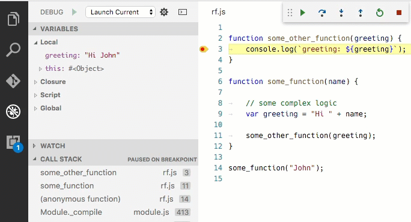
重启动帧不会回滚函数外部的状态变更，因此它可能并不总是按预期工作。
断点
条件断点
条件断点是仅在表达式返回真值时才会暂停的断点。你可以通过右键点击行号旁的装订线并选择"条件断点"来创建：
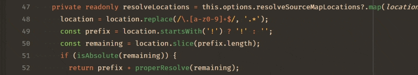
日志点
有时，你只想在代码到达某个位置时记录消息或值，而不是暂停。你可以使用日志点来实现。日志点不会暂停，而是在命中时将消息记录到调试控制台。在 JavaScript 调试器中，你可以使用花括号将表达式插值到消息中，例如 当前值是：{myVariable.property}。
你可以通过右键点击行号旁的装订线并选择"日志点"来创建。例如，这可能会记录类似 位置是 /usr/local 的内容：
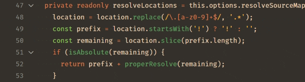
命中次数断点
"命中次数条件"控制断点需要被命中多少次才能"中断"执行。你可以通过右键点击行号旁的装订线，选择"条件断点"，然后切换到"命中次数"来放置命中次数断点。
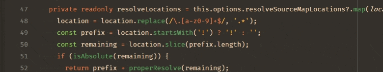
Node.js 调试器支持的命中次数语法可以是整数，或者运算符 <、<=、==、>、>=、% 之一后跟整数。
一些示例：
>10在 10 次命中后始终中断<3仅在前两次命中时中断10等同于>=10%2每隔一次命中中断触发式断点
触发式断点是在另一个断点被命中后自动启用的断点。它们在诊断仅在某个前提条件满足后才发生的代码故障情况时非常有用。
触发式断点可以通过右键点击字形边距，选择添加触发式断点，然后选择启用该断点的其他断点来设置。
断点验证
出于性能原因，Node.js 在首次访问时延迟解析 JavaScript 文件中的函数。因此，断点在 Node.js 尚未看到（解析）的源代码区域中不起作用。
由于这种行为不利于调试，VS Code 会自动向 Node.js 传递 --nolazy 选项。这可以防止延迟解析，并确保断点可以在运行代码之前得到验证（因此它们不再"跳动"）。
由于 --nolazy 选项可能会显著增加调试目标的启动时间，你可以通过将 --lazy 作为 runtimeArgs 属性传递来轻松退出此行为。
这样做时，你会发现一些断点不会"固定"到请求的行，而是"跳转"到已解析代码中的下一个可能行。为避免混淆，VS Code 始终在 Node.js 认为断点所在的位置显示断点。在断点部分，这些断点会显示一个箭头，指示请求的行号和实际行号之间的差异：
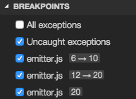
此断点验证发生在会话启动并向 Node.js 注册断点时，或者会话已在运行且设置了新断点时。在这种情况下，断点可能会"跳转"到不同的位置。在 Node.js 解析了所有代码后（例如，通过运行代码），可以使用断点部分标题中的重新应用按钮轻松将断点重新应用到请求的位置。这应该会使断点"跳回"到请求的位置。
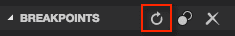
跳过不感兴趣的代码
VS Code 的 Node.js 调试有一个功能，可以避免进入你不想单步执行的源代码（也称为"仅我的代码"）。此功能可以通过启动配置中的 skipFiles 属性启用。skipFiles 是一个要跳过的脚本路径的 glob 模式数组。
例如，使用：
"skipFiles": [
"${workspaceFolder}/node_modules/**/*.js",
"${workspaceFolder}/lib/**/*.js"
]项目中 node_modules 和 lib 文件夹中的所有代码都将被跳过。skipFiles 也适用于调用 console.log 和类似方法时显示的位置：堆栈中第一个未被跳过的位置将显示在调试控制台的输出旁边。
Node.js 内置的核心模块可以在 glob 模式中通过"魔术名称"
"skipFiles": [
"<node_internals>/**/*.js"
]确切的"跳过"规则如下：
- 如果你单步进入一个被跳过的文件，你不会停在那里——你会在下一个不在被跳过文件中的已执行行处停下。
- 如果你设置了在抛出异常时中断的选项，则你不会在从被跳过文件中抛出的异常处中断，除非它们冒泡到未被跳过的文件中。
- 如果你在被跳过文件中设置了断点，你将在该断点处停下来，并且你可以单步执行它直到你步出它，此时正常的跳过行为将恢复。
- 来自被跳过文件内部的控制台消息的位置将显示为调用堆栈中的第一个未被跳过的位置。
被跳过的源代码在调用堆栈视图中以"暗淡"样式显示：
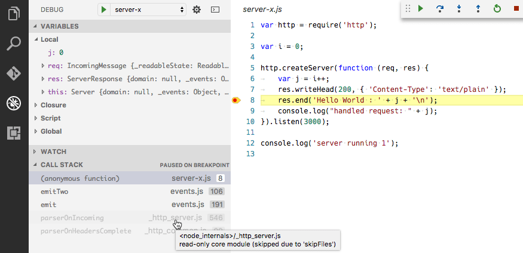
将鼠标悬停在暗淡的条目上会解释堆栈帧被暗淡化的原因。
调用堆栈上的上下文菜单项切换跳过此文件使你能够在运行时轻松跳过某个文件，而无需将其添加到启动配置中。此选项仅在当前调试会话中有效。你也可以使用它来停止跳过由启动配置中 skipFiles 选项跳过的文件。
>注意： legacy 协议调试器支持负 glob 模式，但它们必须跟随正模式：正模式添加到被跳过文件集合中，而负模式从该集合中减去。
在以下（仅限 legacy 协议）示例中，除 'math' 模块外的所有模块都被跳过：
"skipFiles": [
"${workspaceFolder}/node_modules/**/*.js",
"!${workspaceFolder}/node_modules/math/**/*.js"
]>注意： legacy 协议调试器必须模拟 skipFiles 功能，因为 V8 调试器协议本身不支持它。这可能导致单步执行性能降低。
调试 WebAssembly
JavaScript 调试器可以调试编译为 WebAssembly 的代码，前提是它包含 DWARF 调试信息。许多工具链支持发出此信息：
- C/C++ 配合 Emscripten：使用
-g标志编译以发出调试信息。 - Zig：DWARF 信息在"Debug"构建模式下自动发出。
- Rust：Rust 发出 DWARF 调试信息。但是，wasm-pack 目前尚不 在构建过程中保留它。因此，使用常见 wasm-bindgen/wasm-pack 库的用户不应运行
wasm-pack build，而应使用两个命令手动构建：cargo install wasm-bindgen-cli一次性安装必要的命令行工具。cargo build --target wasm32-unknown-unknown构建你的库。wasm-bindgen --keep-debug --out-dir pkg ./target/wasm32-unknown-unknown/debug/生成 WebAssembly 绑定，将.wasm
构建好代码后，你需要安装 WebAssembly DWARF Debugging 扩展。这是一个单独的扩展，用于保持 VS Code 核心的"精简"。安装后，重新启动任何活动的调试会话，然后原生代码应该会在调试器中映射！你应该会看到源代码出现在已加载源视图中，并且断点应该可以正常工作。
在下图中，调试器在创建 Mandelbrot 分形的 C++ 源代码中的断点处暂停。调用堆栈是可见的，包含从 JavaScript 代码到 WebAssembly 再到映射的 C++ 代码的帧。你还可以看到 C++ 代码中的变量，以及对与 int32 height 变量关联的内存进行的编辑。
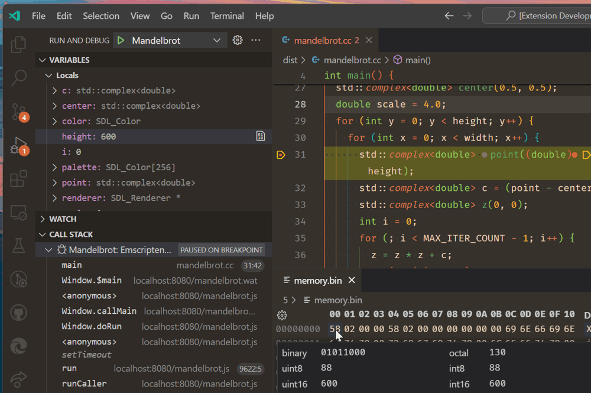
虽然接近同等水平，但调试 WebAssembly 与普通 JavaScript 有一些不同：
- 变量视图中的变量无法直接编辑。但是，你可以选择变量旁边的查看二进制数据操作来编辑其关联的内存。
- 调试控制台和监视视图中的基本表达式求值由 lldb-eval 提供。这与普通的 JavaScript 表达式不同。
- 未映射到源代码的位置将以反汇编的 WebAssembly 文本格式显示。对于 WebAssembly，禁用源映射单步执行命令将使调试器仅在反汇编代码中单步执行。
VS Code 的 WebAssembly 调试建立在 Chromium 作者提供的 C/C++ 调试扩展之上。
支持的类 Node 运行时
当前的 VS Code JavaScript 调试器支持版本 8.x 及以上的 Node、最新版本的 Chrome 和最新版本的 Edge（通过 msedge 启动类型）。
后续步骤
如果你还没有阅读过 Node.js 部分，请查看：
- Node.js - 带有示例应用程序的端到端 Node 场景
要查看 VS Code 调试基础知识的教程，请观看以下视频：
要了解 VS Code 的任务运行支持，请访问：
- 任务 - 使用 Gulp、Grunt 和 Jake 运行任务。显示错误和警告
要编写你自己的调试器扩展，请访问：
- 调试器扩展 - 从模拟示例开始创建 VS Code 调试扩展的步骤
常见问题
如果使用符号链接，我可以调试吗？
可以，如果你为项目内的文件夹创建了符号链接，例如使用 npm link，你可以通过告诉 Node.js 运行时保留符号链接路径来调试符号链接的源文件。在启动配置的 runtimeArgs 属性中使用 node.exe 的 --preserve-symlinks 开关。runtimeArgs 是一个字符串数组，会传递给调试会话运行时可执行文件，默认为 node.exe。
{
"runtimeArgs": [
"--preserve-symlinks"
]
}如果你的主脚本位于符号链接路径内，你还需要添加 "--preserve-symlinks-main" 选项。此选项仅在 Node 10+ 中可用。
如何调试 ECMAScript 模块？
如果你使用 esm 或向 Node.js 传递 --experimental-modules 以使用 ECMAScript 模块，你可以通过 launch.json 的 runtimeArgs 属性传递这些选项：
"runtimeArgs": ["--experimental-modules"]- 使用 Node v8.5.0+ 中的实验性 ECMAScript 模块支持"runtimeArgs": ["-r", "esm"]- 使用 esm ES 模块加载器（不含逗号的["-r esm"]将不起作用）如何设置 NODE_OPTIONS？
调试器使用特殊的 NODE_OPTIONS 环境变量来设置应用程序的调试，覆盖它将导致调试无法正常工作。你应该追加值而不是覆盖它。例如，.bashrc 文件可能包含类似以下内容：
export NODE_OPTIONS="$NODE_OPTIONS --some-other-option=here"